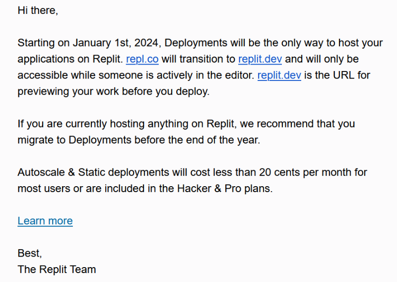
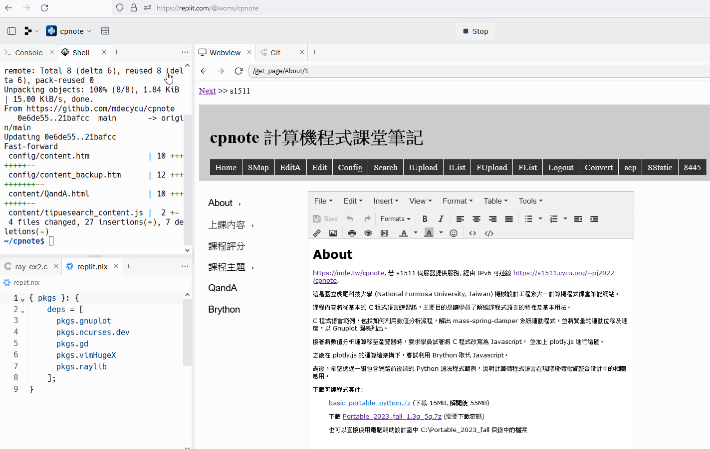

程式應用 <<
Previous Next >> linux
s1511
在 Ubuntu 中要安裝基本 C 編譯器: sudo apt install build-essential
在 Ubuntu 中要安裝 gd graphics library: sudo apt install libgd-dev
在 Ubuntu 中要安裝 gnuplot 套件: sudo apt install gnuplot
在 Ubuntu 中編譯 roc_flag_in_gd.c 指令: cc roc_flag_in_gd.c -lgd -lm
因為 roc_flag_in_gd.c 中使用 gd library 以及 math library, 所以必須在連結時將所需程式庫導入.
2022.08.30 Replit 趁 Heroku 中止提供免費帳號時, 順勢接收許多免費用戶之後, Replit 在 2023.04.13 正式推出 Deployment. 並且允許免費用戶使用. 但在 2023.09.28 卻宣布此一部署服務, 最遲在 2024.01.01 將只提供給付費用戶使用. 意即之後使用者無法再經由 python3 main.py 在廣域網路中使用 repl.co 網址進行編輯 (假如 Webview 仍在, 或許可以在啟動編輯網站後, 在 Webview tag 中登入系統編輯, 但無法在全螢幕中進行編輯).
2023.10.20 收到 Replit 告知 repl.co 網域服務改變的 email 內容, 其中的 Learn More 就是 2023.08.28 的網誌宣布:

註: w8 在內部 Replit Webview 使用"在新分頁開啟", 得到的外部網址為: repl_名稱--repl_username.repl.co
使用 Replit 內部 Webview 編輯動態網站並執行 C 程式的畫面:

因此各學員除了使用近端隨身系統進行 cp2023 倉儲與網站的改版之外, 只能在自架伺服器中採遠端登入的方式在 s1511.cycu.org 主機中維護個人與分組網站.
s1511 如何建立?
建立伺服器:
s1511 是一台安裝 Ubuntu 操作系統的虛擬主機, 為了能讓 cp2023 網站編輯程式能在伺服器中啟動, 擬採下列方式設定:
1. 伺服器的符號名稱為 s1511.cycu.org 表示是 151 實體伺服器上的第一台 Virtualbox 虛擬主機, 並使用 nssm 設定隨實體主機啟動時開啟.
2. 各班學員在 s1511 伺服器中的登入帳號將設為其班級代號加上學號, 以計算機程式課程為例, 學員的帳號將設為 cp 加上學號
3. 各學員將經由學校的電子郵箱接收 s1511 伺服器中的帳號、密碼以及所分配使用的伺服器埠號
4. 9 開頭的埠號將用於 cp2023 倉儲中 server.py 設定用, 屬於內部網路埠號, 由 waitress 負責啟動 WSGI 服務
5. 各學員登入 s1511.cycu.org 之後, 擬採 SSH 設定方式對 Github 主機進行 git push
6. nginx 全球資訊網伺服器中將包含 http, https 與 public_html 等三種服務設定
7. waitress wsgi 伺服器經由 9 開頭內部埠號所送出的 http 動態網站內容, 將由各學員在 s1511.cycu.org 中所啟動 8 開頭外部埠號承接, 且此 http proxy 至 https 的服務將採 stunnel 完成
建立使用者帳號:
取得修課學員名單:
為能直接從學校教務主機取得各課程班級的即時修課名單, 以 Python + WSGI 建立全球資訊網服務 (原始碼: nfulist_wsgi_and_server.7z, wsgi.py)
從 https://stud.cycu.org:8800?semester=1121&courseno=0813&column=True 就可以取得 1a 計算機程式課程的即時修課學員名單, 其中帶有三個輸入參數:
semester 變數, 1121 為 112 學年第 1 學期
courseno 變數, 1a: 0813, 1b: 0826, 2a: 0838, 2b: 0851, 每一個學期各課程都有不同代號 (有沒有更好的設計?)
column 變數, True or False(default), True 表示要以行格式, 上下列出學號, 內定為橫向列印
建立各課程對應的 Ubuntu 學員帳號、密碼檔案:
程式碼 gen_s1511_username_password.py
# Brython 程式碼
# 導入亂數模組
import random
# 導入字串模組
import string
# 利用 def 關鍵字定義函式
# 函式的輸入變數可以設定初始值
def password_generator(size=4, chars=string.ascii_lowercase + string.digits):
# 函式內以多行註解說明函式功能
"""Generate random password
"""
# 利用 return 關鍵字將所產生的亂數字串傳回
return ''.join(random.choice(chars) for _ in range(size))
# 建立一個變數與隨後的字串對應
pass_string = "abcdefhkrstuwxyz"
cp_num = ["0813", "0826"]
cad_num = ["0838", "0851"]
connect_port = 8001
internal_port = 9001
def gen_acc_pass(course, course_num):
global connect_port, internal_port
stud_list =[]
for num in course_num:
url = "https://stud.cycu.org:8800?semester=1121&courseno=" + num + "&column=True"
class_list = open(url).read().split("\n")[:-1]
stud_list += class_list
#print(stud_list)
for stud_num in stud_list:
password = password_generator(4, pass_string)
#print(password)
account = course + stud_num
#print(account)
print(stud_num + "\t" + account + "\t" + password + "\t" + str(connect_port) + "\t" + str(internal_port))
connect_port += 1
internal_port += 1
gen_acc_pass("cp", cp_num)
gen_acc_pass("cad", cad_num)
create_users_txt.py
with open("2023_fall_s1511_account_pass.txt") as f:
data = f.readlines()
# use "cut -d: -f1,3 /etc/passwd" to make sure used uid range
# newusers format:
# pw_name:pw_passwd:pw_uid:pw_gid:pw_gecos:pw_dir:pw_shell
# uid starts from 1003
uid_starts = 1002
users = ""
send = ""
for i in data:
#stud_num \t account \t password \n
stud = i.split("\t")
stud_num = stud[0]
account = stud[1]
password = stud[2]
port1 = stud[3]
port2 = stud[4].rstrip()
uid_starts += 1
uid = str(uid_starts)
gid = uid
gecos = account
home_dir = "/home/" + account
shell = "/bin/bash"
#print(stud_num, account, password)
users += account + ":" + password + ":" + uid + ":" + gid + ":" + gecos + ":" + home_dir + ":" + shell + "\n"
send += stud_num + ":" + account + ":" + password + ":" + port1 + ":" + port2 + "\n"
with open("users.txt", "w", encoding="utf-8", newline='\n') as f:
f.write(users)
with open("send.txt", "w", encoding="utf-8", newline='\n') as f:
f.write(send)
若要修正跳行符號錯誤, 可以採用:
change_shell.py
import os
with open("users.txt", "r", encoding="UTF-8") as f:
data = f.read().splitlines()
for i in data:
account = i.split(":")[0]
print(account)
os.system("sudo chsh -s /bin/bash " + account)
當執行上列程式時, 為避免在程式中列出管理者密碼, 可以編輯 /etc/sudoers 並加入:
# only require a password once every 60 minutes
Defaults timestamp_timeout=60
可以讓 sudo python3 change_shell.py 執行時無需輸入管理者密碼.
s1511 虛擬主機環境與使用流程:
1. s1511 主機只有 IPv6 網路協定, 因此 ssh, sftp 以及 https 等連線的使用都必須透過雙協定支援代理主機設定, 才能與僅支援 IPv4 的電腦相連. 使用電腦輔助設計室的電腦, 只要下載2023_fall_w7_cadlab_network_setup.7z (需要下載密碼), 放入隨身碟, 然後根據說明納入自己所分配到的固定 IPv6, 就可以採管理者身分執行批次檔的方式完成網路設定.
2. 利用 ssh 協定取下個人的代理主機, 其設定必須先用 ssh-keygen 在 .ssh 目錄中建立 private key (id_rsa) 以及 public key (id_rsa.pub), 並且將 id_rsa.pub 登錄到個人 github.com 帳號下 Settings 下的 SSH and GPG keys 設定區. 而且需要在 .ssh 目錄中, 利用 config 設定檔案, 指定 Host 以及代理主機, 此 Host 名稱可以視為 Linux 操作系統下, 以 ssh 對 github.com 連線的 session 名稱.
3. 當使用 python3 server.py & 執行 process 後, ps -axo pid,comm,uname | grep "python3" 的指令, 可以列出各自帳號下所 background 執行的 process pid, 若需要列出執行 process 對應目錄, 則可以利用 pwdx 加上 pid 後執行取得.
.ssh 目錄中的 config, 將 SSH session 名稱設為 github.com:
Host github.com
User git
Hostname github.com
ProxyCommand /usr/bin/ncat --proxy p4.cycu.org:3128 --proxy-type http %h %p
public_html 中以 cpnote 名稱建立目錄後, 必須以 https 格式取下 cp2023 倉儲內容作為靜態網站
acp 必須納入 public_html 目錄中的靜態網站 git pull, 且利用 chmod u+x acp 令其可以執行
acp 內容:
#! /bin/bash
git add .
git commit -m "$1"
git push
cd ./../public_html/cp2023
git pull
cp2023_1101_last.txt
Letsencrypt 數位簽章更新:
sudo /etc/init.d/nginx stop
certbot certonly --standalone
程式應用 <<
Previous Next >> linux